Sign Modifications
Sign Modifications
Inversion, rotation
A sign can be reversed by writing "\" after it : "A1\" is 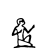
You can turn signs by any angle, using \R and the angle in degrees
 anx\R30-G5-G7
anx\R30-G5-G7
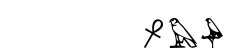
A1-A\R90-A\R180-A\R270-A\R360-
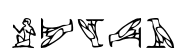
These two features can be combined :
A1-A\\R90-A\\R180-A\\R270-A\\R360-
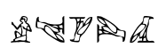
Scaling
It's possible to scale a sign by writing "\" and a percentage.
The sign's base size will be modified accordingly :
 A1-A1\80-A1\50-A1\20
A1-A1\80-A1\50-A1\20
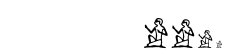
The percentage can even be greater than 100:
 t-t\80-t\200-t\400-t\1000-
t-t\80-t\200-t\400-t\1000-
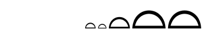
note that the sign is limited by the cadrat maximal size.
This can be used to customize the effect of scaling in cadrats :
Let's consider the group  , written "nw:nw*nw".
, written "nw:nw*nw".
Notice that the upper 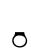 is a bit larger than the others.
We can correct this with scaling :
 nw\70:nw\70*nw\70-
nw\70:nw\70*nw\70-
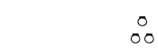
In traditionnal typography, the sizes of fonts are ruled by a decrease of a factor sqrt(2).
This gives a nice visual effect, and you might try using these factors :
 A1-A1\70-A1\49-A1\35-A1\24
A1-A1\70-A1\49-A1\35-A1\24
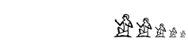
A stress test for effect combination : rotated scaled sign (any use ?)
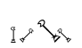
rotation test with non-square sign :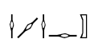
Ignored signs
(JSesh extension)
As cadrats don't respect words boundaries, you might find yourself quoting a word, or a text,
which start in the middle of a cadrat. In JSesh, the "\i" operator means that a sign is irrelevant.
it will be drawn in very light gray, simply for space filling.
 M\i:p*t:pt
M\i:p*t:pt
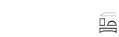
Wide signs and groups
In Late Egyptian texts, in particular hieratic texts, some groups can be very wide.
Often, they contain a hieroglyph which is very elongated, an lots of smaller signs below it.
The normal scaling rules would reduce the cadrat's width, and give both a difficult to read and unfaithful rendering.
Thus, JSesh provides the operator "\l". It says that the current sign can have any width it likes.
without it, : "m-xt:x\80*t\80*D54\80" gives 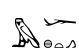
with it, : "m-xt\l:x\80*t\80*D54\80" gives 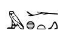
The best results are obtained by combining this and scaling :
 ir\200:r*t*W-ir\200\l:r*t*W
ir\200:r*t*W-ir\200\l:r*t*W
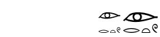
Grammatical codes
The manuel states that " " (space) after a sign means that this sign ends a word, and that " " (two spaces) mark a sentence end
JSesh stores this information along with the signs, but currently doesn't do anything with it.
As an alternative, after the Winglyph practice, you can use underscores instead of spaces.
 i-w-=f_-m_-p*t:pt_
i-w-=f_-m_-p*t:pt_
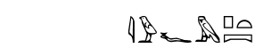